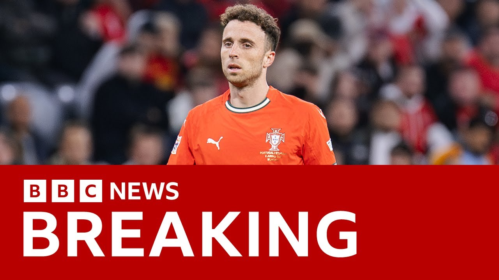

【BBC News 20250704 利物浦前锋迪奥戈·若塔在车祸中丧生】
Summary: Liverpool footballer Diogo Jota tragically died in a car accident in Zamora province, northwestern Spain, near the Portuguese border. The crash occurred around midnight on the A52 highway. Jota’s younger brother, André Filipe, who was with him, also died in the accident. According to reports, their Lamborghini veered off the road and caught fire after a tire burst during an overtaking maneuver, killing both men instantly. Jota was a Portuguese international who had previously played for Atlético Madrid and Wolverhampton Wanderers. He joined Liverpool in 2020 for over £40 million and helped the club win several major trophies, including a recent Premier League title. He had 49 caps for Portugal, won the UEFA Nations League twice, and had just gotten married on June 22—two weeks before the accident. He was 28 years old.
摘要： 利物浦足球运动员迪奥戈·若塔在西班牙萨莫拉省发生的车祸中不幸遇难，事故发生在距葡萄牙边境不远的A52公路，事发时间为午夜前后。同行的弟弟安德烈·费利佩也在事故中身亡。事故因兰博基尼超车时轮胎爆裂冲出道路并起火，导致两人当场死亡。若塔是葡萄牙国脚，曾效力马竞、狼队，并于2020年以超4000万英镑加盟利物浦，为球队赢得多项荣誉。他生前为国家队出战49场，赢得两次欧国联冠军，并于两周前刚刚结婚，终年28岁。

⏱️ Estimated Reading Time: 4 min
📚 四级生词 📚 六级生词 📚 雅思生词 📚 托福生词 📚 专八生词 📚 SAT生词 📚 考研生词 📚 GRE生词 📚 高考生词 📚 其它生词生词
The Liverpool footballer Diego Jott has been killed in a car crash that's being reported by a Spanish state-owned TV station citing local firefighters.
利物浦足球运动员迪奥戈·若塔在一场车祸中遇难，西班牙国有电视台援引当地消防员的报道称。
Well, they say that the accident happened in Zamora Province in northwestern Spain not far from the Portuguese border.
事故发生在西班牙西北部萨莫拉省，距离葡萄牙边境不远。
Diego was a Portuguese international and as well as playing for Liverpool, he had played for Atletico, Madrid and Wolves.
迪奥戈是葡萄牙国脚，除效力利物浦外，还曾为马德里竞技和狼队踢球。
And we are just seeing that BBC Mis Murzy side online have spoken to the Guardia Civil and they have now confirmed the death of Diego Jott along with his brother Andre Felipe.
BBC Mundo在线频道已联系国民警卫队，确认迪奥戈·若塔与其兄弟安德烈·费利佩身亡。
Uh they say that they were killed in that car crash in the municipality of Cerna dealer in the province of Zamora at around half midnight.
他们在萨莫拉省塞尔纳德莱尔市的车祸中身亡，事发时间接近午夜。
So the early hours of this morning.
即今日凌晨时分。
The statement that our colleagues have continues.
同事获得的声明称。
It says that the car a Lamborghini left the road due to a tire blowout while overtaking another car.
涉事的兰博基尼因超车时轮胎爆裂冲出道路。
The car set on fire and both men are confirmed to have died.
车辆起火后两人确认死亡。
So the BBC can now confirm that the Liverpool footballer Diego Jotter has been killed in a car crash in Spain along with his brother.
BBC现可确认利物浦球员迪奥戈·若塔与兄弟在西班牙车祸中遇难。
Well, that news of course just coming into us.
该消息刚刚传来。
Let's go straight to our sports correspondent, Hugh Ferris, who joins us from the BBC Sports Center in Sulford.
请连线索尔福德BBC体育中心的体育记者休·费里斯。
Hugh, that news now has been confirmed.
休，该消息现已确认。
Diego Jott and his brother killed in a car crash involving a Lamborghini.
迪奥戈·若塔与兄弟在一场涉及兰博基尼的车祸中丧生。
Hugely significant because Diego Jott was such a rising star in sport.
此事影响重大，因迪奥戈·若塔是体坛新星。
A real success for Liverpool.
他为利物浦立下汗马功劳。
Yes, that's right, Reini. uh killed at the age of 28.
是的莱妮，他在28岁遇难。
These reports coming into us initially uh from the Spanish language newspaper Marker quoting local authorities in that Zamora region which talked of a crash involving the death of a 28 and 26 year old his brother younger brother also a footballer although one that had not risen to the uh to the heights of Diego Jot a Liverpool player he's been there since uh 2020 Liverpool paid more than4 million pounds to sign him uh from Wolverampton Wanderers having helped them get promoted ed to the Premier League since when he has been playing for the Premier League club, winning three major trophies as well, not least the Premier League title just in the last few months.
西班牙《马克报》援引萨莫拉地方当局称，事故导致28岁和26岁的兄弟身亡，其弟同为足球运动员但未达若塔高度。他2020年以超400万英镑从狼队转会利物浦，助球队升入英超并赢得三项重要奖杯，包括近期英超冠军。
The marker reports talked of the uh the location of the accident being on the A52.
《马克报》称事故发生在A52公路。
It is a um significant road running east to west in the northwestern part of Spain that he was in the car with his younger brother near Palaios de Cabbria which is a very small local town just north uh of the A52.
这条东西向公路位于西班牙西北部，事发时他与弟弟在A52公路北侧小镇帕拉西奥斯德卡夫雷拉附近。
Uh he is a player who has played 49 times for Portugal.
他为葡萄牙出战49场。
He's won the Nations League, the UEFA tournament uh twice, including just in the last few weeks latally uh for the second time uh for Portugal.
他两夺欧国联冠军，包括最近几周第二次为葡萄牙夺冠。
He is a player who uh perhaps not in the starting 11 over the last season or so for Liverpool, but very much uh one of the squad that has been so successful, particularly uh in the last 12 months under the new manager Anna Slot.
他上赛季或许未稳坐利物浦首发，但仍是球队成功的关键成员，尤其在新帅斯洛特执教的过去12个月。
and uh he just a couple of weeks ago got married um on the 22nd of June.
他两周前刚于6月22日结婚。
A posting on uh Twitter uh just celebrating his recent marriage.
推特上有帖子庆祝他新婚。
It is a tragic day for him, for his family, uh, and for Liverpool.
这对他的家人和利物浦而言都是悲剧性的一天。